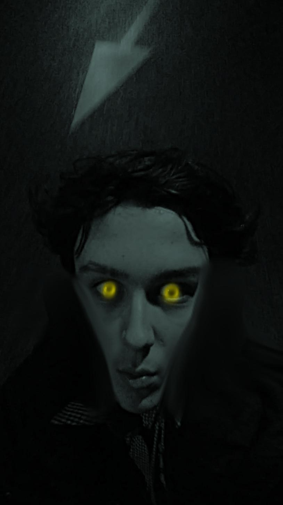

Over mij
Ik ben Tino Janssen, ik ben 16 jaar en ik woon in Simpelveld.
Ik werk bij McDonald's sinds augustus 2020.
Ik wil later sound designer worden omdat ik nu muziek maak en het leuk vind om eigen geluiden te maken en ze modificeren hoe ik ze wil.
